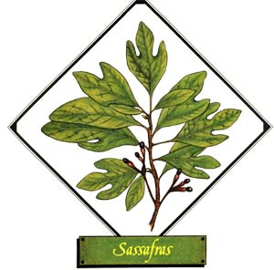
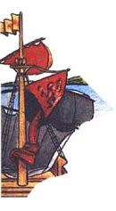
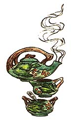

Lately, more and more people hove begun to understand just how limited-in both variety and nutritional value--our"modern" diets have become. This realization has sparked o new and wide spread interest in the culinary and therapeutic uses of herbs . . . those plants which-although not well known today-were, just one short generation ago, honored "guests" on the dinner tables and in the medicine chests of our grandparents' homes. In this regular feature, MOTHER will examine the availability, cultivation, and benefits of our "forgotten" vege table foods and rem edies . . . and-we hope-help pre vent the loss of still another bit of ancestral lore.
Winauk, cinnamon wood, ague tree, sassafrax, or saloop . . . by whatever common name it goes, sassafras (Sassafras ofcinale, S. albidum, S. variffolium, or Laurus sassafras) is one of the wild treasures of North America. Legend has it that the windborne fragrance of the trees enabled Columbus to persuade his mutinous crew that land was near . . . and the herb is still one of the spicier delights to be found on a walk in the woods. Western historians have generally attributed the "discovery" of sassafras to the Spaniards exploring Florida, but American Indians from the Great Lakes to the Gulf of Mexico had been using the plant for hundreds possibly thousands-of years before the explorers arrived.
Sassafras was known primarily as a medicinal herb to the Indians and, later, to the Europeans, who shipped great quantities to shops in England and on the Continent. The leaves could be made into teas and poultices, while the root bark was either chipped or crushed and then steeped in boiling water-one ounce of bark to one pint of water-and taken in doses of a wine glassful as often as needed to reduce fevers . . .soothe chronic rheumatism, gout, and dropsy . . .relieve eye inflammation . . .ease menstrual and parturition pain . . .help cure scurvy and various skin conditions . . . and act as a disinfectant in dental surgery. Because it was thought to be a blood purifier and effective against excess mucus discharge, the plant was even regarded as a cure for syphilis and gonorrhea.
The volatile oil of sassafras, which contains safrole, was also used to combat assorted ailments, the usual dosage being from one to five drops in boiled water. More than this small amount of essence could be dangerous: One teaspoon of the pure oil is enough to cause vomiting, dilated pupils, stupor, spontaneous abortion, collapse . . .and even death! Despite the possibility of adverse effects from overdoses, however, sassafras oil was often employed as a flavoring. In fact, it was used to cover the taste of opium in potions given to many nineteenth century children to keep them quiet and "well behaved".
Not all of the versatile plant's uses are medicinal. The leaves, dried and powdered, are the file used in Creole cookery to thicken and flavor soups. The dried root bark, steeped to a tea that was served with milk and sugar, made a popular drink called "saloop",offered at almost every street corner in England up through the early 1900's.
In more recent times, the U.S. Food and Drug Administrationin-1960-conducted tests on the chemical constituent safrole which showed that massive amounts fed to rats caused liver cancer in the rodents. This prompted a ban on sales of sassafras tea . . .although not, it
might be remarked, on nutmeg, pepper, star anise, or ordinary China tea, all of which contain the substance. Safrole is practically insoluble in water, however, which may help to account for sassafras tea's long history of evidently safe use.
Sassafras may be found as a tree, shrub, or thicket, depending on where it grows. Smooth and orange brown when young, the herb's bark becomes rough and grayish with age. The plant's most distinctive identifying trait is its array of bright green leaves-yellow in autumn -which may have a "mixture" of several shapes: oval, mittenlike, and trilobate! The roots are large and woody with rough, spongy bark. The herb is found in dryish, sandy loams alongside roadways and in the borders of woods from Massachusetts to Michigan, Iowa, and Kansas . . . and south to Florida and Texas. Two good sources of sassafras are Forest farm (Dept. TMEN, 990 Tetherow Road, Williams, Oregon 97544 . . . catalog $1.00) and The Naturalists (Dept. TMEN, P.O. Box 435, Yorktown Heights, New York 10598 . . . catalog $1.00).
|
Did the fragrance of sassafras tell Columbus that land was near? |
 Sassfras ""saloop"" was popular in the 19th century |
 |
|
 |
|
|